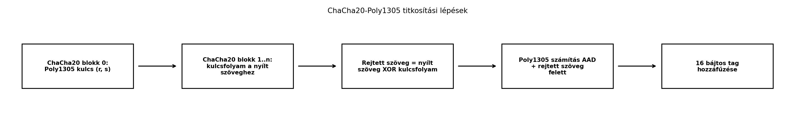

Az előző alfejezetben megismertük az AES-GCM-et, amely hardveres gyorsítás (AES-NI) esetén rendkívül gyors, de szoftveres környezetben – például mobiltelefonokon, beágyazott eszközökön vagy egyszerűbb processzorokon – az AES kerekek táblakereséses implementációja lassú lehet, és óvatlan megvalósítás esetén cache-időzítéses oldalcsatornáknak is kitett. A ChaCha20-Poly1305 egy olyan hitelesített titkosítás (AEAD), amely kifejezetten szoftveres futásra tervezett, konstans idejű, és a modern „kevés hardverutasítással is gyors” elv mintapéldája. Ha egy VPN, üzenetküldő vagy böngésző nem támaszkodhat AES-NI-re, akkor a ChaCha20-Poly1305 gyakran az első számú választás. Ebben az alfejezetben felépítjük ezt a konstrukciót, és megmutatjuk, hogyan kell helyesen használni egy egységes AEAD-interfészen keresztül.
A ChaCha20 egy folyamrejtjel, amely kulcsból és nonce-ból kulcsfolyamot állít elő. A Poly1305 egy Carter–Wegman-MAC, amely egy erős, de egyszer használatos hitelesítő kulcsot igényel. A konstrukció trükkje, hogy ezt a MAC-kulcsot magából a ChaCha20 kulcsfolyamból nyerjük, így egyetlen rejtjelkulcsból és egyetlen nonce-ból mind a titkosítás, mind a hitelesítés megvalósul.

Az ábra azt mutatja, hogy a 0. blokk kiválasztása után a titkosítás a megszokott folyamrejtjel-logikát követi, majd a kapott rejtett szöveget és a kapcsolódó adatot (AAD) a Poly1305 egyetlen 16 bájtos címkébe (tag) tömöríti. A végső kimenet a rejtett szöveg és a címke összefűzése.
Az RFC 8439 szerint a séma három összetevőből áll:
Definíció. A ChaCha20-Poly1305 AEAD egy olyan hitelesített titkosítási séma, amelyet a következő paraméterek határoznak meg:
A titkosítási művelet: amely a fent leírt lépésekkel állítja elő a rejtett szöveget és a címkét. A visszafejtés: amely csak akkor ad vissza nyílt szöveget, ha a címke érvényes; egyébként hitelesítési hibát jelez.
A séma biztonsága két pilléren nyugszik. Egyrészt a ChaCha20 folyamrejtjel biztonságos pszeudovéletlen generátorként viselkedik, ha a nonce egyedi marad. Másrészt a Poly1305 egy erős, egyszer használatos MAC, amelynek kulcsa minden titkosításnál friss, mert a ChaCha20 0. blokkja a véletlenszerű kulcsból és nonce-ból származik. Ha a nonce-ot soha nem használjuk újra ugyanazzal a kulccsal, akkor a MAC-kulcs is egyedi lesz, és a Poly1305 biztonsága garantálja, hogy a támadó nem tud érvényes címkét hamisítani.
Továbbvitt eredmény. Az itt bemutatott AEAD-interfész és hibakezelési minta alapozza meg a A TLS 1.3 kézfogás, A Signal-protokoll: X3DH és a double ratchet és az 1. projekt: fájltitkosító eszköz AEAD-dal és jelszóból származtatott kulccsal alfejezeteket; a hibakezelési elveket az API-misuse: a leggyakoribb kriptográfiai programozási hibák alfejezet általánosítja.
A modern kriptográfiai könyvtárak – így a Python
cryptography csomagja is – az összes AEAD sémát egységes
felületen keresztül teszik elérhetővé. Ennek célja, hogy az alkalmazó ne
keverhesse össze a titkosítás és a hitelesítés lépéseit, és a
hibakezelés mindig konzisztens legyen.
A cryptography.hazmat.primitives.ciphers.aead modulban a
következő osztályokat találjuk (többek között):
AESGCMAESGCMSIVAESCCMAESOCB3ChaCha20Poly1305AESSIV (determinisztikus, nem klasszikus AEAD; eltérő
interfésszel)A cryptography 46.0.5-ös változatában (a
dir() kimenete alapján helyben ellenőrizve)
XChaCha20Poly1305 osztály nincs. A nonce-os osztályok (az
AESSIV kivételével) ugyanazt a két metódust kínálják:
encrypt(nonce, plaintext, associated_data) →
ciphertext + tag összefűzve,decrypt(nonce, ciphertext, associated_data) →
plaintext, ha a címke érvényes, egyébként kivételt
dob.Az AESSIV szignatúrája eltér:
encrypt(data, associated_data) és
decrypt(data, associated_data), nonce nélkül, és az
associated_data bájtsorozatok listája (több
AD-komponens); AESSIV(key).encrypt(b"x", [b"ad"]) helyesen
fut, nonce átadása TypeError-t okozna.
A visszafejtés atomikus: a függvény a teljes bemenetet feldolgozza, ellenőrzi a címkét, és csak akkor adja vissza a nyílt szöveget, ha minden ellenőrzés sikeres volt. Az API garantálja, hogy soha nem ad vissza részleges nyílt szöveget, ha a címke hibás. Ez a „nincs részleges visszafejtés” szabály. A gyakorlatban ez azt jelenti, hogy a megvalósításnak puffereznie kell a visszafejtett adatot, vagy a hitelesítést a visszafejtéssel párhuzamosan kell számítania, de a végeredményt csak a címke összehasonlítása után szabad a hívónak átadni.
Miért kritikus ez? Ha az alkalmazás a hibás tag ellenére is feldolgozná a visszafejtett – de nem hitelesített – adatot, akkor a támadó úgynevezett padding oracle vagy egyéb aktív támadást hajthatna végre, amely akár a teljes titkosítást is feltörheti. Az AEAD lényege éppen az, hogy a titkosság és az integritás együtt, elválaszthatatlanul érvényesüljön.
InvalidTagA cryptography könyvtárban a hitelesítési hiba a
cryptography.exceptions.InvalidTag kivétel. Ennek kezelése
kötelező: a hívónak el kell kapnia a kivételt, és semmiképpen sem szabad
a visszafejtésből származó bájtokat felhasználnia. A hibaüzenet nem
árulhat el részleteket a belső állapotról; a könyvtár ezt
szabályozza.
try:
plaintext = aead.decrypt(nonce, ciphertext, aad)
except InvalidTag:
# Naplózzuk a hibát, de a plaintext nem létezik.
# Soha ne használjunk fel semmilyen részeredményt!
raiseA fenti minta a helyes: a decrypt kivételt dob, a hívó
megszakítja a műveletet, és nem ad át semmilyen adatot a feldolgozó
rétegnek. Ha a hívó az except ágban visszaadná a
részlegesen visszafejtett puffert, az katasztrofális lenne.
A standard ChaCha20-Poly1305 nonce-mérete 96 bit (12 bájt). Ez elég nagy ahhoz, hogy egy kulccsal sok üzenetet titkosítsunk, de a véletlen nonce generálásánál a születésnapi paradoxon miatt óvatosnak kell lenni. Ha egy kulccsal üzenetet titkosítunk véletlen 96 bites nonce-okkal, akkor már jelentős az esélye annak, hogy két titkosítás ugyanazt a nonce-t kapja, ami a titkosság teljes elvesztéséhez vezet. Bár üzenet hatalmas szám, nagy forgalmú rendszerekben – például egy globális VPN-kiszolgálón – elvileg elérhető.
Az XChaCha20-Poly1305 ezt a problémát úgy oldja meg, hogy a nonce-ot 192 bitre (24 bájt) növeli. Az XChaCha20 egy kiterjesztés: a 24 bájtos nonce-ból és a kulcsból a kulcsból és a nonce első 16 bájtjából a HChaCha20 függvénnyel egy köztes kulcsot származtat, majd ebből a köztes kulcsból és egy 12 bájtos nonce-ból (4 nulla bájt, majd a nonce utolsó 8 bájtja) futtatja a szabványos ChaCha20-at. A Poly1305 kulcsot ugyanígy az első blokkból nyeri.
Ennek előnye, hogy a 192 bites nonce esetén a véletlen nonce-ok
ütközési valószínűsége még akkor is elhanyagolható, ha a kulcsot nagyon
hosszú ideig használjuk, és az üzenetek száma a
nagyságrendbe esik:
üzenetnél az ütközés esélye kb.
,
azaz
-nél
.
A gyakorlatban ezért ha nem akarunk számlálót fenntartani, vagy a
nonce-kezelést egyszerűsíteni szeretnénk, az XChaCha20-Poly1305 a
javasolt választás: secrets.token_bytes(24)-gyel generálunk
nonce-ot, és nem kell az egyediséget külön nyilvántartani.
Figyelem. A XChaCha20-Poly1305 nem része az eredeti
RFC 8439-nek, hanem egy széles körben elfogadott kiterjesztés, amelyet
például a libsodium támogat; a Python cryptography csomag
46.0.5-ös változata nem tartalmaz
XChaCha20Poly1305 osztályt. A pontos specifikációt a
libsodium projekt és a kapcsolódó draft dokumentumok tartalmazzák; itt a
konstrukció alapötletét tanítjuk, a szabványszakaszok ellenőrzését
igényeljük.
cryptography csomaggalA következő kód bemutatja az egységes AEAD-interfész használatát a
cryptography könyvtárral. A kulcs és nonce generálása a
secrets modulból történik; a rögzített plaintext és AAD
csak tesztcélú, a kimenet ellenőrizhető tulajdonságokat mutat.
# OKTATÁSI CÉLRA – NEM ÉLES HASZNÁLATRA
import secrets
from cryptography.hazmat.primitives.ciphers.aead import ChaCha20Poly1305
from cryptography.exceptions import InvalidTag
# Kulcs generálása: 256 bit (32 bájt)
kulcs = secrets.token_bytes(32)
# Nonce: 96 bit (12 bájt) a standard ChaCha20-Poly1305-höz
nonce = secrets.token_bytes(12)
aad = b"header"
plaintext = b"Titkos uzenet!"
aead = ChaCha20Poly1305(kulcs)
# Titkosítás: a kimenet a rejtett szöveg és a 16 bájtos címke összefűzése
ciphertext_plus_tag = aead.encrypt(nonce, plaintext, aad)
print("ciphertext+tag hossza:", len(ciphertext_plus_tag), "bájt")
# Helyes visszafejtés
try:
pt = aead.decrypt(nonce, ciphertext_plus_tag, aad)
print("Sikeres visszafejtés:", pt == plaintext)
except InvalidTag:
print("Ez nem fordulhat elő helyes adatokkal.")
# Hibás AAD-vel való visszafejtési kísérlet
try:
aead.decrypt(nonce, ciphertext_plus_tag, b"rossz header")
except InvalidTag as e:
print("Várt hiba:", type(e).__name__)Várt kimenet:
ciphertext+tag hossza: 30 bájt
Sikeres visszafejtés: True
Várt hiba: InvalidTagA kimenet magyarázata: a plaintext hossza 14 bájt, így a
rejtett szöveg is 14 bájt; a címke 16 bájt, összesen 30 bájt. A helyes
visszafejtés visszaadja az eredeti üzenetet, a rossz AAD pedig
InvalidTag kivételt vált ki, ahogy elvárjuk.
A ChaCha20-Poly1305 az egyik legsikeresebb modern AEAD. Néhány konkrét példa:
ChaCha20Poly1305
AEAD-ot használja, X25519 kulcscserével és BLAKE2s hash-sel. A WireGuard
tervezői szándékosan választották ezt a kombinációt, mert szoftveresen
gyors, konstans idejű, és a nonce-kezelés egyszerűen illeszkedik a
protokoll üzenetszámlálójához.TLS_CHACHA20_POLY1305_SHA256 titkosítási csomagot. Mobil
eszközökön, ahol az AES-NI gyakran hiányzik, ez az AEAD lényegesen
gyorsabb, ezért a Chrome, Firefox és Safari is előszeretettel
használja.A közös tanulság: a ChaCha20-Poly1305 akkor ideális, ha a platform nem rendelkezik AES-hardvergyorsítással, vagy ha a konstans idejű szoftveres megvalósítás egyszerűsége prioritás. A nagyobb nonce-ot kínáló XChaCha20 pedig a modern, véletlen nonce-ot használó protokollok kedvelt építőköve.
Nonce-újrahasználat ugyanazzal a kulccsal. Ha ugyanazt a kulcsot és nonce-ot kétszer használjuk, a ChaCha20 ugyanazt a kulcsfolyamot állítja elő. A két rejtett szöveg XOR-ja kiadja a két nyílt szöveg XOR-ját, ami a titkosság elvesztéséhez vezet. Ráadásul a Poly1305 ugyanazt a kulcsot kapja, ami MAC-ütközések keresését teszi lehetővé. Helyes gyakorlat: minden kulcshoz egyedi nonce-ot rendeljünk; nagy nonce esetén véletlent, kicsi nonce esetén számlálót használjunk.
A visszafejtett adat használata a tag ellenőrzése
előtt. Ha az alkalmazás a decrypt hívás közben
vagy után, de a InvalidTag kivétel kezelése előtt
feldolgozza a visszafejtett puffert, az aktív támadóknak nyújt támadási
felületet. Helyes gyakorlat: soha ne férjünk hozzá a
plaintexthez, amíg a decrypt sikeresen vissza nem tért; a
kivételt mindig fogjuk el, és ne használjunk részeredményt.
A kapcsolódó adat elhagyása. Az AAD arra szolgál, hogy hitelesítsük a környezeti információkat: fejléc, verziószám, célcím, kulcsazonosító. Ha ezeket nem hitelesítjük, a támadó megváltoztathatja a fejlécet, ami a protokoll szintjén komoly gondot okoz. Helyes gyakorlat: minden olyan adatot, amelyet a fogadónak értelmeznie kell, adjunk át AAD-ként.
Véletlen nonce használata a 96 bites verzióval hosszú
életciklusú kulcs esetén. Bár a születésnapi határ
üzenet, egy nagyon forgalmas rendszerben ez elérhető lehet.
Helyes gyakorlat: ha nem tudjuk garantálni a nonce
egyediségét, váltsunk XChaCha20-Poly1305-re (libsodium-kötéssel; a
cryptography nem ad rá osztályt), és használjunk
secrets.token_bytes(24) nonce-ot.
A decrypt kivétel túl széles
elkapása. Ha az alkalmazás az except Exception
ágban minden hibát ugyanúgy kezel, az elrejtheti a programozási hibákat,
és a hitelesítési hibát összekeverheti más rendellenességekkel.
Helyes gyakorlat: csak a konkrét
InvalidTag kivételt kapjuk el, a többit engedjük
tovább.
Az alábbi kérdésekkel eldöntheted, hogy továbbléphetsz-e.
decrypt metódusa visszaadhat részleges nyílt szöveget, ha a
címke hibás. (Hamis – a szabály szerint soha.)cryptography könyvtár
hibás tag esetén? InvalidTag.1. feladat (A). Sorold fel az egységes AEAD
interfész bemeneteit és kimeneteit a cryptography
könyvtárban. Mi a különbség az encrypt és a
decrypt kimenete között?
2. feladat (A). Egy 200 bájtos nyílt szöveget
titkosítunk ChaCha20-Poly1305-tel. Hány bájt lesz a
ciphertext + tag hossza?
3. feladat (B). Írj Python függvényt, amely a
cryptography csomag ChaCha20Poly1305
osztályával, minden híváshoz friss, véletlen 96 bites nonce-zal
titkosít, a nonce-ot a rejtett szöveg elé fűzi, és a
decrypt hibáját biztonságosan kezeli (az
XChaCha20-Poly1305-höz a cryptography nem ad osztályt;
ahhoz libsodium-kötés, például PyNaCl kell – ellenőrizendő). A függvény
bemenete kulcs, plaintext, AAD; visszatérési értéke a visszafejtett
plaintext, vagy None, ha a címke ellenőrzése
sikertelen.
4. feladat (B). Mi a hiba az alábbi kódban?
ct = aead.encrypt(nonce, plaintext, aad)
# ... hálózati átvitel ...
pt = b""
try:
pt = aead.decrypt(nonce, ct, aad)
except InvalidTag:
log_error()
process(pt)Mi történik, ha a címke hibás?
5. feladat (C). Bizonyítsd be (szemléletesen), hogy ha egy kulccsal és nonce-zal két különböző nyílt szöveget titkosítunk a ChaCha20 folyamrejtjellel, akkor a két rejtett szöveg XOR-ja kiadja a két nyílt szöveg XOR-ját. Milyen következménye van ennek a Poly1305 kulcsra?
6. feladat (D). Tervezz egy egyszerű üzenetküldő protokollt, amely XChaCha20-Poly1305-öt használ, és minden üzenethez véletlen nonce-ot generál. A fogadónak hogyan kell kezelnie a nonce-t? Milyen AAD-t vennél fel, hogy a protokoll biztonságos legyen közbeékelődéses támadó (Mallory) ellen?
Önellenőrzés – válaszok
decrypt atomikus: ha a tag hibás, nem ad
vissza semmilyen nyílt szöveget, csak kivételt dob.InvalidTag a cryptography.exceptions
modulból.1. feladat megoldása. Az interfész bemenetei: kulcs,
nonce, nyílt szöveg (encrypt esetén) vagy rejtett szöveg +
tag (decrypt esetén), és kapcsolódó adat (AAD). Az
encrypt kimenete a rejtett szöveg és a címke összefűzve; a
decrypt kimenete a nyílt szöveg, vagy
InvalidTag kivétel.
2. feladat megoldása. A folyamrejtjel miatt a rejtett szöveg hossza megegyezik a nyílt szöveg hosszával, azaz 200 bájt. A címke 16 bájt. Tehát összesen bájt.
3. feladat megoldása. A függvény a
ChaCha20Poly1305 osztályt használja, minden híváshoz friss
12 bájtos nonce-ot generál, a nonce-ot a rejtett szöveg elé fűzi, és a
decrypt hibát elkapja:
# OKTATÁSI CÉLRA – NEM ÉLES HASZNÁLATRA
import secrets
from cryptography.hazmat.primitives.ciphers.aead import ChaCha20Poly1305
from cryptography.exceptions import InvalidTag
def seal(key, plaintext, aad):
nonce = secrets.token_bytes(12) # friss, véletlen 96 bites nonce
return nonce + ChaCha20Poly1305(key).encrypt(nonce, plaintext, aad)
def open_(key, blob, aad):
nonce, ct_plus_tag = blob[:12], blob[12:]
try:
return ChaCha20Poly1305(key).decrypt(nonce, ct_plus_tag, aad)
except InvalidTag:
return NoneA 96 bites véletlen nonce ütközési korlátja miatt (kb. üzenet kulcsonként, ellenőrizendő) hosszú életű kulcsnál számlálót vagy XChaCha20-at (libsodium) érdemes használni.
Várt viselkedés (szemléltető, nem futtatott):
open_(key, seal(key, m, aad), aad) == m; hibás tag vagy AAD
esetén None.
4. feladat megoldása. A hiba: a
process(pt) a try-blokkon kívül fut, így hibás
címke esetén is lefut – ekkor pt a kezdeti üres (vagy egy
korábbi, elavult) értéket tartja, a hibát a hívó nem kapja meg, és a
feldolgozás hitelesítetlen vagy üres adattal folytatódik. Helyes minta:
a process(pt) a sikeres decrypt után, az
else ágban (vagy a try-on belül) fusson, az
except ág pedig szakítsa meg a műveletet
(raise vagy return). A
cryptography a decrypt-ben soha nem ad vissza
részleges nyílt szöveget; a veszély az alkalmazás hibakezelésében
van.
5. feladat megoldása. Legyen a kulcs , a nonce , és a ChaCha20 kulcsfolyam . Az első titkosítás: ; a második titkosítás ugyanazzal a nonce-zal: . Ekkor mert az kiejti egymást. Ez pontosan a két nyílt szöveg XOR-ja. Ha az egyik nyílt szöveg ismert vagy részben sejthető, a másik visszafejthető. A Poly1305 kulcs ugyanaz marad, ezért a támadó a MAC-kulcsot is megismerheti, ami címkehamisítást tesz lehetővé.
6. feladat megoldása. A protokoll üzenetenként
véletlen 24 bájtos nonce-ot generál, és azt a rejtett szöveggel együtt
elküldi. A fogadó a nonce-ot kivonja, és ugyanazzal az AAD-vel
visszafejti. AAD-ként fel kell venni a küldő azonosítóját, a
kulcsverziót, az üzenetsorszámot, és a protokoll verzióját. Így a fogadó
ellenőrzi, hogy az üzenet a várt partnertől, a várt kulccsal, a várt
sorrendben érkezett. Ha Mallory megpróbálja a rejtett szöveget vagy az
AAD-t módosítani, a címke ellenőrzése InvalidTag kivételt
dob. A 192 bites véletlen nonce miatt a kulcsfolyam ismétlődésének
(nonce-ütközésnek) az esélye elhanyagolható – ez valószínűségi, nem
abszolút garancia.
A ChaCha20-Poly1305 egy modern AEAD, amely szoftveresen gyors,
konstans idejű, és a Poly1305 MAC-kulcsot a ChaCha20 kulcsfolyam első
blokkjából nyeri. A titkosítás a 0. blokk kihagyásával XOR-alapú
folyamrejtjelként működik; a kapcsolódó adatot és a rejtett szöveget a
Poly1305 16 bájtos címkével hitelesíti. Az AEAD-interfész egységes:
encrypt(nonce, plaintext, aad) visszaadja a
ciphertext+tag-et,
decrypt(nonce, ciphertext, aad) pedig csak akkor ad nyílt
szöveget, ha a címke érvényes; hibás címke esetén
InvalidTag kivételt dob, és soha nem ad ki részleges
plaintextet. A nonce-újrahasználat végzetes, mert ugyanaz a kulcsfolyam
és ugyanaz a MAC-kulcs ismétlődik. Az XChaCha20-Poly1305 192 bites
nonce-ot használ, így véletlen nonce generálás biztonságos.
Továbbvitt eredmény. Az itt bemutatott AEAD-interfész
és hibakezelési szabályok közvetlenül alkalmazandók a A TLS 1.3 kézfogás, A
Signal-protokoll: X3DH és a double ratchet és az 1. projekt: fájltitkosító eszköz AEAD-dal és jelszóból
származtatott kulccsal alfejezetekben; a hibakezelési mintát az API-misuse: a leggyakoribb kriptográfiai programozási
hibák alfejezet általánosítja.
Az alfejezet a ChaCha20-Poly1305 IETF-szabványára (RFC 8439), a TLS
1.3-ra (RFC 8446), valamint a cryptography csomag
dokumentációjára támaszkodik. A PyCA cryptography könyvtár
ChaCha20Poly1305 osztályának pontos metódusnevei, a
kivételtípus neve és az XChaCha20 specifikációjának hivatalos
hivatkozása a dokumentációban ellenőrizendő; itt a stabil, széles körben
ismert konstrukciót ismertetjük. Az XChaCha20Poly1305
osztály a cryptography 46.0.5-ben nem létezik (helyben
ellenőrizve). A WireGuard, a TLS 1.3 és a Signal protokollok belső
használatának részleteit a megfelelő specifikációk tartalmazzák; a
példák az általánosan elfogadott gyakorlatot tükrözik.